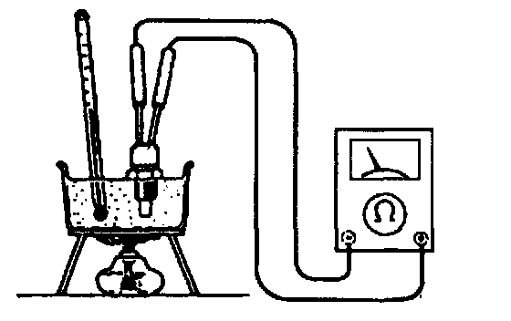
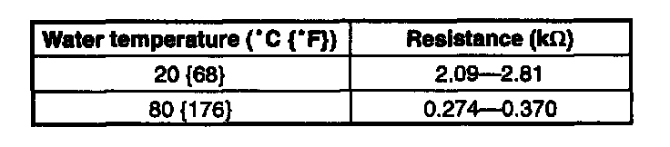

Air Temperature Sensor ( Ambient / Intake ): Testing and Inspection
Inspection of ResistanceNOTE:
- Perform the following test only when detected.
1. Disconnect the intake air temperature sensor connector.
2. Remove the intake air temperature sensor.
3. Place the intake air temperature sensor in water with a thermometer, and heat the water gradually.

4. Measure the resistance of the intake air temperature sensor by using an ohmmeter.

Specification
5. If not specified, replace the intake air temperature sensor. If intake air temperature sensor is okay, but PID value is out of specification, inspect as follows:
Open circuit
- Reference voltage circuit (Intake air temperature sensor connector terminal B and PCM connector terminal 2B.)
- Ground circuit (Intake air temperature sensor connector terminal A and PCM connector terminal 3F)
Short circuit
- Intake air temperature sensor connector terminal B and PCM connector terminal 2B to ground.
6. Reconnect the intake air temperature sensor connector.